I build practical, end-to-end data and geospatial solutions – from scrapers and ETL pipelines, to interactive apps, dashboards, and research workflows. Below is a selection of projects, organized into two groups: Interactive apps & tools and Research & methods.
Interactive apps & tools
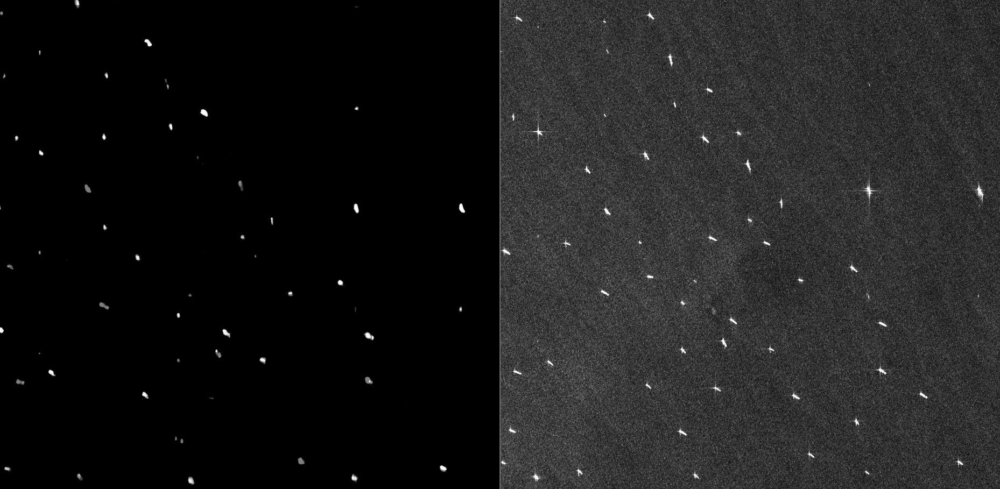
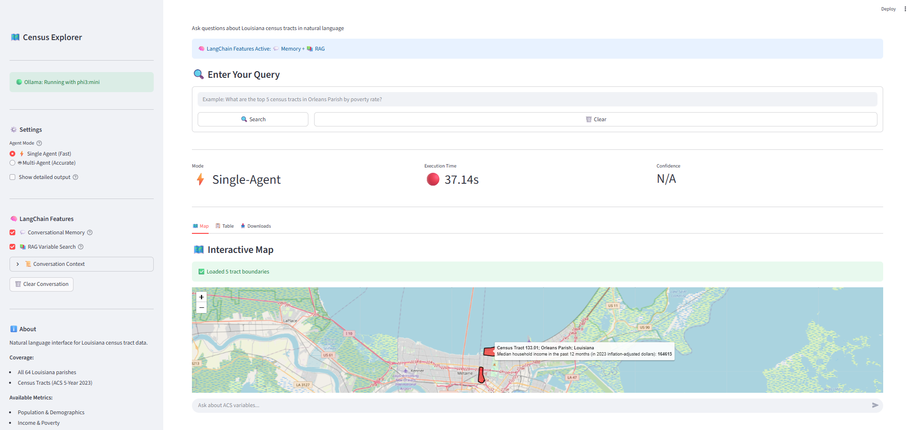
Census LLM Agent (Analysts & Planners)
Impact: Enabled non-technical users to explore and extract insights from U.S. Census data using natural language requests, reducing the effort of crafting API queries and manual data pulls.
What it does: Interactive Census query agent that translates natural language into structured API calls.
Tech: Python · LLM agents · Docker
LLM Agents Docker Census
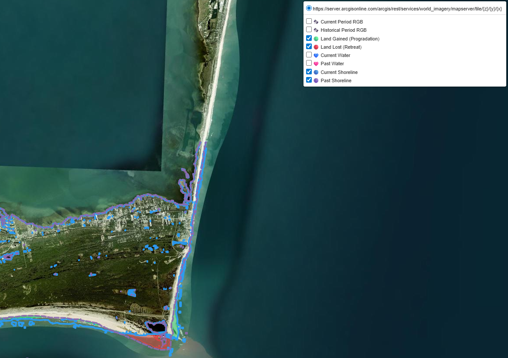
Coastal Change Detection App (Environmental Researchers & Planners)
Impact: Accelerated detection of shoreline change trends by providing an interactive platform for visual comparison of satellite imagery, cutting analysis time from hours to minutes.
What it does: Coastal change explorer for interactive shoreline analysis.
Tech: Python · Shiny · Remote sensing
Python Shiny Environmental Remote sensing
Waffle House Index Geospatial App (Emergency Planners)
Impact: Helped planners quickly identify areas with potential storm impact by enabling fast filtering and export of geospatial data, supporting more informed resource allocation decisions.
What it does: Storm impact & resilience tool for emergency planning.
Tech: R · Shiny · Geospatial
Shiny Mapping Public safety
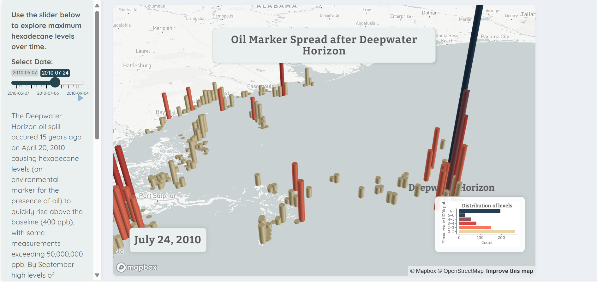
Deepwater Horizon Hexadecane App (Environmental Scientists)
Impact: Provided an intuitive interactive dashboard for exploring spatial and temporal concentration patterns from the Deepwater Horizon oil spill, improving communication of key insights.
What it does: Hexadecane visualization dashboard for environmental analysis.
Tech: R · Shiny · 3D Geospatial visualization
Environmental Remote sensing Visualization
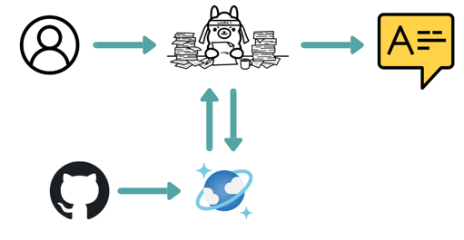
Local RAG Ingestion Pipeline (Developers & Data Teams)
Impact: Reduced effort required to convert large code repositories into searchable knowledge stores by building a local-first RAG pipeline, enabling faster retrieval and exploration of code content.
What it does: Local RAG pipeline using CosmosDB and Ollama for code repository search.
Tech: Python · RAG · Cosmos DB · Ollama
RAG Ollama Azure Cosmos
Tech: Python · Desktop app
Monte Carlo Sphere: 2D & 3D π Approximation
A standalone Python executable that demonstrates Monte Carlo estimation of π in 2D and 3D with interactive visuals. Built to show how numerical methods connect to geometry in an intuitive way.
Numerical methods Desktop Education
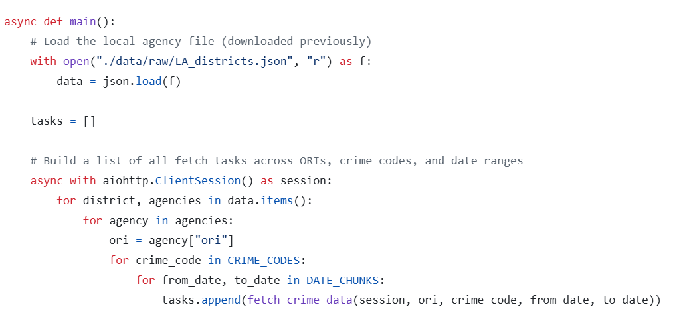
FBI Crime Data Explorer API Bot (Data Analysts)
Impact: Automated large-batch requests to the FBI Crime Data Explorer API, eliminating manual splitting and restructuring of queries, enabling cleaner, faster data extraction for analysis.
What it does: Automated FBI API query bot for bulk data extraction.
Tech: Python · APIs · Automation
APIs Automation Crime data
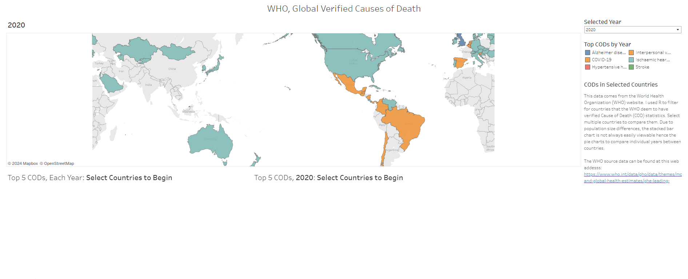
WHO Mortality Dashboard (Public Health Analysts)
Impact: Transformed static WHO mortality data into an interactive dashboard with dynamic filters and calculated metrics, helping analysts uncover patterns and trends more efficiently than with static reports.
What it does: Dynamic mortality analytics dashboard for public health insights.
Tech: Tableau · Data visualization
Tableau Health data
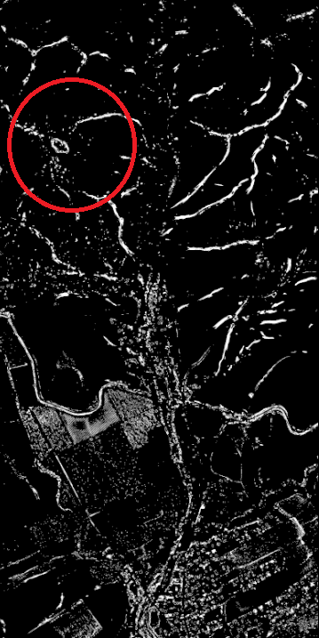
Geomorphons Terrain Feature Processing (GIS Specialists)
Impact: Standardized generation and processing of geomorphon terrain features within QGIS, enabling reproducible landform classification workflows at scale.
What it does: Terrain feature workflow for automated geomorphon processing.
Tech: Python · QGIS · Geoprocessing
Geoprocessing Terrain
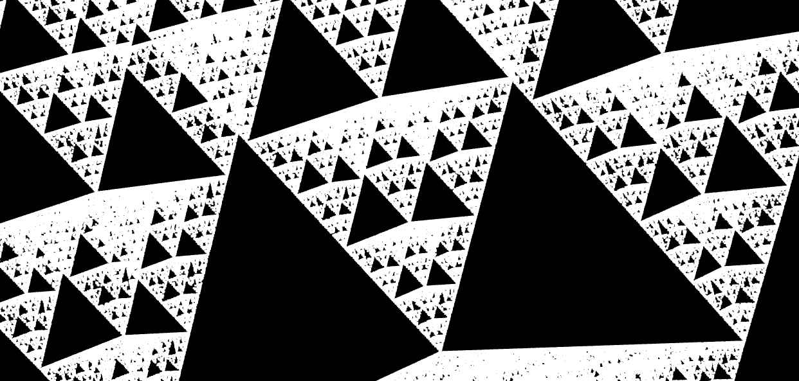
Tech: R · Data viz
Chaos Game in 3D
A 2D chaos game rendered in three dimensions, used as a teaching and exploration tool for probabilistic fractal generation and advanced data visualization.
Fractals Visualization
Research & methods
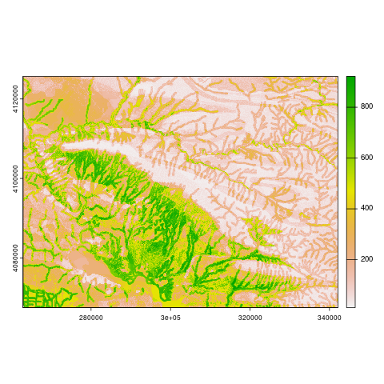
Sampling Bias & Environmental Correlation (Kurdistan)
Impact: Quantified and corrected for sampling bias in environmental predictors, improving reliability of archaeological predictive models for Northern Iraqi Kurdistan.
What it does: ML insights into archaeological sampling bias using RF, GBM, and MaxEnt.
Tech: Machine learning · RF · GBM · MaxEnt
Archaeology SDM Bias
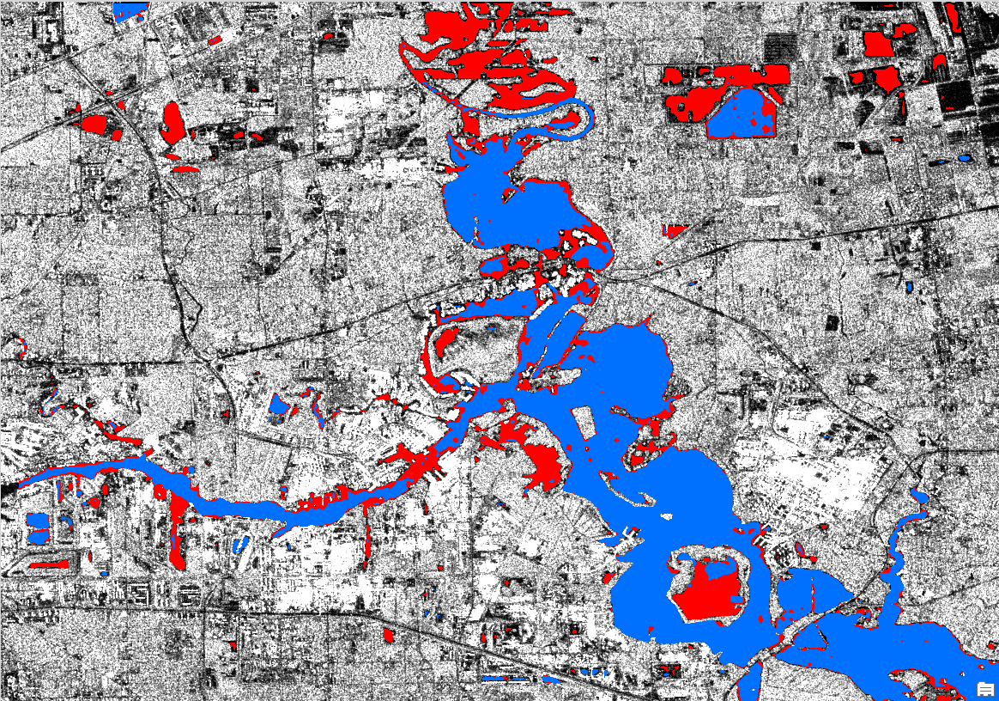
Deep Learning for Flood Evaluation (Emergency Management)
Impact: Enhanced flood extent detection and risk assessment by combining spatial data with deep learning models, improving situational awareness for planners.
What it does: Flood risk evaluation using deep learning and remote sensing.
Tech: Deep learning · Remote sensing
Remote sensing Flooding
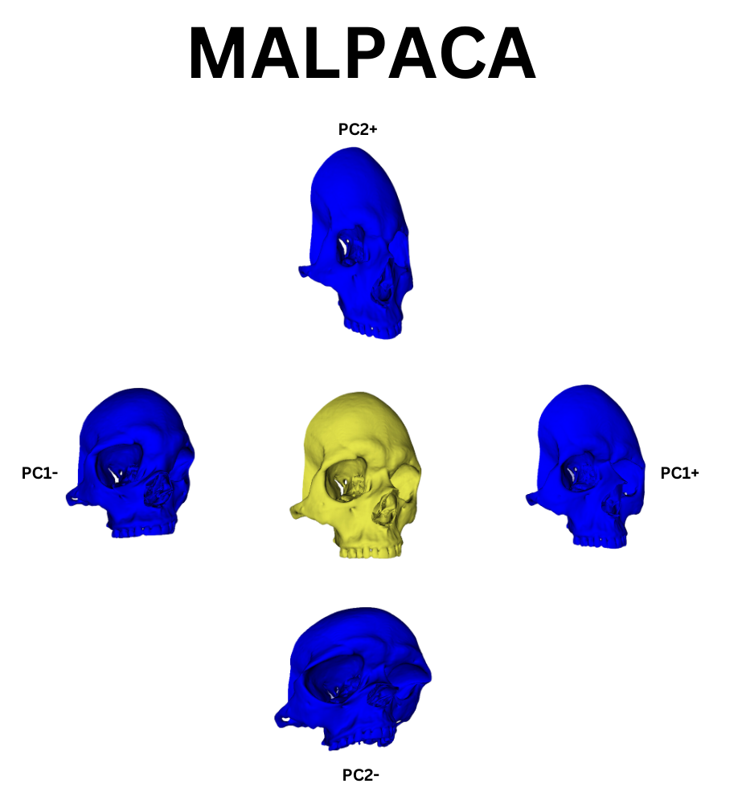
Automated 3D Landmarking (Human Viscerocranium) (Analysts)
Impact: Reduced manual landmark placement workload by applying automated techniques on 3D skull scans, supporting classification and shape analysis.
What it does: Automated morphometric landmarking for 3D cranial analysis.
Tech: 3D morphometrics
3D Morphometrics
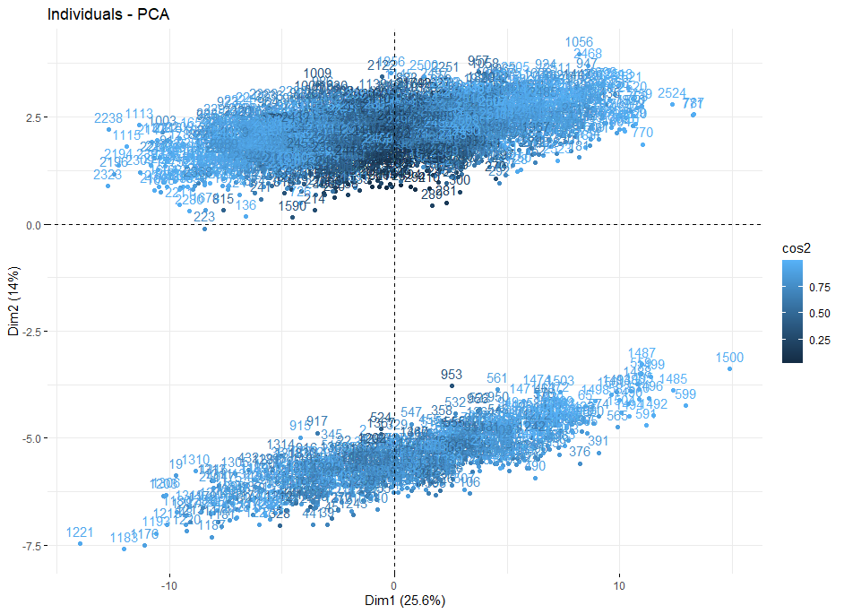
PCA for Visual Inspection of Missing Data (Analysts)
Impact: Helped analysts visualize and understand missing data patterns using PCA, improving diagnosis of potential biases prior to modeling.
What it does: Data quality visualization tool for missing data analysis.
Tech: PCA · Data exploration
PCA Data quality

Machine Learning for Archaeological Geographic Data (Archaeologists)
Impact: Demonstrated an end-to-end pipeline for applying machine learning to geographic archaeological datasets, uncovering spatial influence of key covariates.
What it does: Geographic ML pipeline for archaeological research.
Tech: Machine learning
Archaeology ML
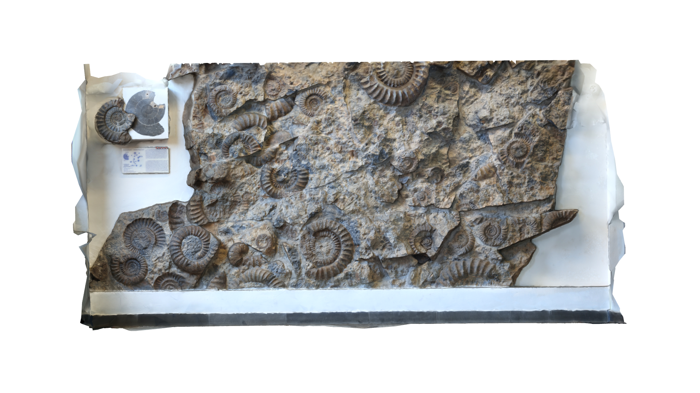
Structure-from-Motion 3D Photogrammetry (Scientists & Analysts)
Impact: Delivered a complete photogrammetry workflow to generate detailed 3D models from photographs, useful for both scientific visualization and spatial analysis.
What it does: 3D model generation workflow using photogrammetry.
Tech: Photogrammetry · 3D modeling
Photogrammetry 3D models